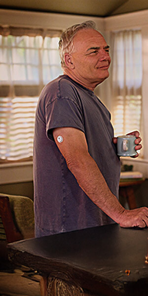

Living with
diabetes and
on Medicare*1?
Medicare and other payor criteria may apply. The FreeStyle Libre 3 system includes the Libre 3 Plus sensor, Libre 3 sensor, Libre 3 app, Libre App, and the Libre 3 reader. *Patients must meet Medicare eligibility coverage criteria. 1. Local Coverage Determination (LCD) L33822, Glucose Monitors, https://www.cms.gov/medicare-coverage-database/view/lcd.aspx?LCDId=33822.
The FreeStyle Libre 3 Plus sensor is widely covered by Medicare for patients managing diabetes with insulin*1,2.
Medicare and other payor criteria may apply. *Patients must meet Medicare eligibility coverage criteria. 1. Local Coverage Determination (LCD) L33822, Glucose Monitors, https://www.cms.gov/medicare-coverage-database/view/lcd.aspx?LCDId=33822. 2. Data on file, Abbott Diabetes Care.
The FreeStyle Libre 3 Plus sensor is widely covered by Medicare for patients managing diabetes with insulin*1,2.
Medicare and other payor criteria may apply. *Patients must meet Medicare eligibility coverage criteria. 1. Local Coverage Determination (LCD) L33822, Glucose Monitors, https://www.cms.gov/medicare-coverage-database/view/lcd.aspx?LCDId=33822. 2. Data on file, Abbott Diabetes Care.
It’s easy to apply and wear3,
3. Alva, S. Diabetes Therapy (2023): https://doi.org/10.1007/s13300023-01385-6.
no fingersticks needed†.
†Fingersticks are required if your glucose alarms and readings do not match symptoms or when you see Check Blood Glucose symbol during the first twelve hours.
Check eligibility now
This is progress.
Medicare and other payor criteria may apply. The FreeStyle Libre 3 system includes the Libre 3 Plus sensor, Libre 3 sensor, Libre 3 app, Libre App, and the Libre 3 reader. Product for prescription only, for Important Safety Information please visit FreeStyleLibre.us. The sensor housing, FreeStyle, Libre, and related brand marks are marks of Abbott. Other trademarks are the property of their respective owners. © 2025 Abbott. ADC-105192 v1.0